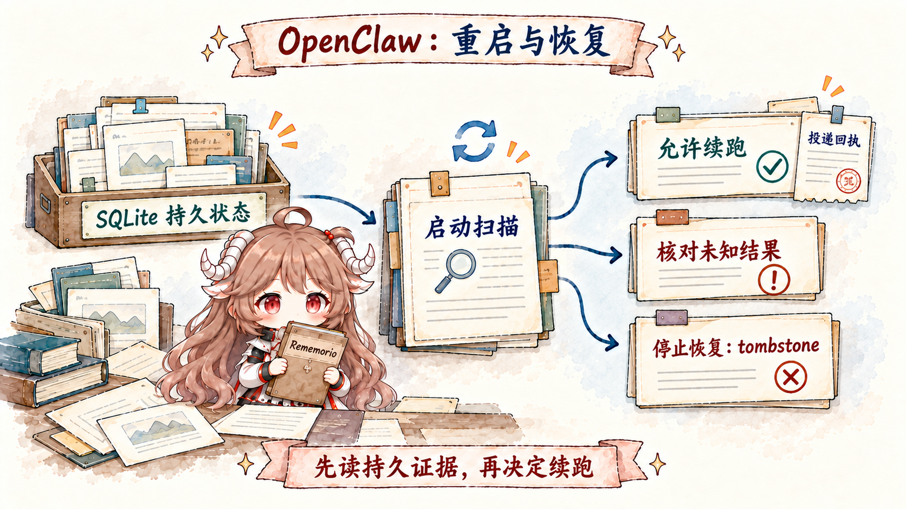

想象一个值班 Agent：每半小时看一次有没有值得提醒的事；工作日上午七点生成日报；收到构建事件时启动隔离分析；长任务完成后马上通知；Gateway 升级重启时继续未完成对话。把这些需求都塞进一个“while true + sleep”，会立刻碰到四个问题：错过的 tick 是否补跑，运行记录放哪里，外部消息是否重复发送，进程中断后谁判断上一次做到哪一步。
OpenClaw 把这几件事交给不同模块：Scheduler 决定何时触发；Session 与 Agent Runtime 执行一次 turn；各执行器与 Cron History 记录运行结果；Channel Delivery 保存外部发送回执；Recovery 只根据这些持久记录作决定。进程内的 Promise、连接和模型流可以消失，但新进程必须能从数据库判断工作是否开始、是否完成、是否已经发给用户。
读完后你应该能回答。巡检怎样迁入普通 Automation；Job 的运行会话与投递目标怎样分开；current 与指定 session 有什么不同；运行完成与发送完成怎样记录；Gateway 如何接续中断工作；未知副作用怎样核对；以及 tombstone、autoDisabled 与 crash-loop breaker 分别限制什么。
本文依据。源码固定在 f4e3844。默认值、重试次数与保留时间只描述这个快照；更稳定的结论是：运行状态要持久化，外部发送要可去重，未知副作用先核对，再按当前权限决定后续动作。
一、时间触发怎样唤醒 Agent
1.1 “常驻”要拆成触发、执行、记录与投递
| 问题 | 由谁处理 | 持久记录 | 不能证明什么 |
|---|---|---|---|
| 什么时候醒 | Automations scheduler / hook | job、schedule、next run、trigger state | 不能证明工作已经完成 |
| 谁在执行 | Session Controller / Agent Run / Child Runtime | sessionKey、runId、对应的 Session 或进程 | 不能证明结果已对外发送 |
| 发生了什么 | 执行器记录 / cron run history / transcript | 运行状态、结果与中断原因 | 不能决定下一次触发 |
| 用户是否收到 | Delivery queue / receipt / requester session | delivery claim、idempotency key、provider receipt | 不能把不安全执行自动重放 |
很多“偶尔重复提醒”或“重启后任务消失”的根因，就是把其中两列合并。一条运行记录仍是 running，不一定进程还活着；一个 agent run succeeded，不一定消息已 delivered；一个 cron job 还 enabled，也不代表 Gateway 停机期间应该把每个错过的 occurrence 全部补跑。
1.2 时间来源不只有定时器
OpenClaw 能被外部消息、at/every/cron schedule、认证 Webhook、受监督 stream、后台命令完成或 restart sentinel continuation 唤醒。它们可能都启动一个 Agent turn，但各自保留来源身份、运行标识与重复处理规则。
定时巡检由 Automation 驱动。后台命令、子任务、Hook 与重启的后续事件则进入普通会话执行路径；它们不依赖巡检 Job 存在，也不依赖 Cron 开关。Exec 完成通知还要等待启动它的 turn 结束，避免通知反过来取代自己的发起者。
1.3 巡检成为普通可编辑 Job
当前快照已移除专用 Heartbeat 执行器与 heartbeat_respond。默认巡检创建函数生成普通 agentTurn Job：通常每 30 分钟检查一次，使用主会话的 session: 目标，设置 idleOnly=true、skipIfScratchEmpty=true，并向 owner 投递。Provider 可以提供不同的初始 cadence。
Setup 只为 ambient owner 首次创建这份 Proactive check。一次性创建回执会保留下来；删除或编辑 Job 后，启动与配置重载不会把默认值重新写回来。其他 Agent 需要显式创建自己的巡检 Job。
1.4 迁移保留状态，也尊重后续编辑
Heartbeat 迁移契约把已有 monitor 转成普通 Job，保留身份、历史、scratch 内容与版本、禁用状态、autoDisabled、相位 anchor 和待处理触发。Doctor 先验证 canonical Job 已持久化，再移除旧 heartbeat 配置；旧 HEARTBEAT.md 会备份。
重复执行 Doctor、启动或重载配置，都应保留用户对 Job 的编辑与删除。巡检规则从此在 Job 的 schedule、scratch、activeHours、idleOnly 和 delivery 中维护。关闭 Cron 会停止这些定时巡检；完成事件仍走前一节的普通会话路径。
1.5 静默结果使用普通 Automation 协议
默认巡检 prompt 要求读取自己的 scratch 与相关会话，只在必要时行动，无事可报时返回 NO_REPLY。运行中的 Job 也可通过 Automations 的 record_result 保存 no_change、progress、done、blocked 或 needs_attention 等结构化结果；no_change 抑制自动投递，真实执行错误仍会记为失败。
旧 Heartbeat 的重复提醒抑制与“无路由便跳过执行”已经移除。重复提醒可以再次发送，缺少投递路由也不阻止模型检查；投递结果按普通 Job 规则记录。显式存在且为空的 scratch 可使巡检跳过，scratch 尚不存在时则允许运行。
// 默认巡检 Job 的关键字段（其余身份与状态由服务保存）
{
schedule: { kind: "every", everyMs: 1800000 },
sessionTarget: "session:agent:main:main",
idleOnly: true,
payload: {
kind: "agentTurn",
message: "检查巡检便笺；无事可报时返回 NO_REPLY。",
skipIfScratchEmpty: true
},
delivery: { mode: "announce", target: "owner" }
}1.6 忙碌、时间窗口与投递各自判断
执行前检查先处理 activeHours、idleOnly 与 scratch 等条件，再进入运行。idleOnly 的 Job 遇到忙碌会话会等待或延期；等待后还会重新检查时间窗口。一次性 Job 被准入条件延期，与完成一次执行分别记录。
sessionTarget 决定在哪里读取上下文和执行；delivery 决定结果属于哪段对话或外部目的地。为巡检设置静默投递，仍可保留运行结果。需要固定业务时刻时应明确时区、schedule 与停机后的补偿规则。
二、Automation、运行记录与完成投递怎样配合
2.1 Automation 保存定时规则
Automations 在 Gateway 进程内调度，Job 定义、运行状态与历史保存在共享 SQLite。支持一次性 at、固定间隔 every、带时区的 cron，以及 on-exit、stream 等来源。Gateway 运行时才能真正触发；重启后调度器从保存的状态重新接管。
一次性 Job 成功后默认删除，除非显式保留。整点 recurring cron 可通过 stagger 分散执行，需要严格时刻时使用 exact。定时规则持久化本身不能证明停机期间每个 occurrence 都执行过；需要补算的业务应保存处理水位，并使用业务幂等键。已开始却被重启打断的运行另按第三节的条件恢复。
2.2 同一个 Job 有四种 Session 形态
| sessionTarget | 上下文与执行 | 适合 | 需要注意 |
|---|---|---|---|
main | Agent 主会话的普通 turn 队列 | 提醒、主会话巡检 | 等待 turn settle 后才记录完成 |
isolated | 独立运行，新 transcript | 日报、后台分析 | 完整 prompt 与明确投递 |
current | 独立运行，读取创建会话的有界历史 | 依赖对话背景的周期工作 | 使用 scheduled Agent workspace |
session:custom-id | 指定会话的普通 turn 队列 | 延续同一会话与工作目录 | 绑定失效时停止，不回退目录 |
执行形态契约明确区分 current 与 session:<key>。前者有独立运行身份，结果提交到对话也不会自动恢复原 Agent；它不继承创建会话的工作树或 cloud placement。后者先等活跃工作结束，再准备上下文，使用已有会话保存的 workspace/worktree；工作树缺失、退休或不匹配时会停止。
main 与 custom 会话的队列接收只证明已接纳，Automation 要等 turn settle。isolated 会保留安全的模型与思考偏好，但不会从旧运行继承 channel、elevated、origin 或 ACP binding。
2.3 无人值守任务按归属与当前策略授权
automation 运行时没有人在旁边回答澄清或点击临时 approval。它的最终回复应是 deliverable 或明确失败，而不是“我准备开始”。需要交互审批的动作不适合无人值守 schedule；更稳妥的是只读巡检后通知人，由前台 turn 执行高风险变更。
普通 Agent Turn Job省略工具列表或选择 * 时保存 *，每次使用所属会话当前的工具策略，继续受 group、Agent、sandbox 与 runtime 限制。Agent 显式请求有限列表时，列表受创建 turn 的有效工具面封顶。script payload、condition trigger 和捕获 Codex app authority 的 Job 则保留创建时列表。* 表示沿当前归属策略解析，实际调用仍受权限检查。
Command Payload 的权限更高：它直接在 Gateway 主机上执行 argv，不经过模型可见 Exec Tool 的审批和 Policy。只有经过授权的 Operator 才能创建或编辑这类 Job，相关配置也应进入审计。
2.4 运行证据由各执行器保存
Tasks/TaskFlow 的统一运行表、API 与 CLI 已退役。Cron 运行恢复、会话 pending inputs、native subagent registry 与媒体完成机制分别保存其运行和交付责任。排查时从发起者与 runId 找到对应记录，再判断是否仍有执行者。
升级保留旧存储行供核对；Doctor 只迁移能证明归属的旧 native assignment，含糊记录会告警并保留。历史 Task 行不能作为当前运行仍在进行的依据。用 Automation 历史、会话 transcript、原生子 Agent 记录与投递回执拼出一次工作经过。
2.5 完成事件直接进入会话与投递流程
后台命令完成、native child 结果和重启 follow-up 使用普通 session execution。子 Agent 的普通完成、private parent completion 与 collect/yield 各有自己的交付责任，见第七篇。请求者会话接收结果、父 Agent 处理结果、外部消息发送成功，是三个可分别核查的阶段。
隔离 Automation 若需要整合子任务，应使用 collect: true 并在结束前通过 agents_wait 收集结果。其投递会在原运行 deadline 内等待后代终态，避免把父 Agent 的临时说明当作交付物。子任务仅返回 NO_REPLY 会进入缺失答案恢复，仍无结果或超时会使运行失败。
模型返回“遇到阻碍”仍可能是一次正常结束的模型输出，按 Job 的投递策略发送；调度器不会仅凭自由文本把它判成 provider/runtime 失败。执行错误、业务结果与投递错误因此要分别阅读。
三、Gateway 重启后怎样决定续跑或停止
3.1 重启后仍然存在的是数据库记录

对话记录与 Session Row 存在每个 Agent 各自的 SQLite 中；Subagent Registry、Cron Job 与投递队列存在共享状态数据库中；Agent 主动请求的重启另有 Restart Sentinel。JavaScript Promise、Socket、Provider Stream 与原进程中的执行对象都会消失。恢复流程不会让它们重新出现，而是把数据库记录与新进程中实际运行的工作逐项核对。
优雅 restart 会先停止接新工作，然后给 active turn/background task 一个 drain budget，默认五分钟，实际还受服务管理器的停止预算约束。大多数更新因此不需要 resume。超过预算或 crash 导致中断时，session 才进入 recovery path；drain 窗口中新工作明确拒绝，不会悄悄塞进即将退出的进程。
3.2 主会话在执行前就写入恢复声明
普通文本 Turn 进入已有主会话时，会在同一个 SQLite 事务里写入用户消息、running 状态与恢复投递声明，然后才调用模型或 Hook。关闭进程时还会标记仍在运行的 Session；硬崩溃之后，启动扫描会寻找“数据库仍写着 running、但新进程中没有对应工作”的 Row，并清理过期的对话锁。
三条路径互相补充：入库事务覆盖刚接收请求就崩溃的情况，关闭标记覆盖有序中断，启动扫描覆盖来不及清理的强制终止。只看对话记录的最后一条是不是用户消息，会把“回复已经生成但还没发出”和“请求从未正式开始执行”混为一谈。
3.3 每次恢复复用同一个 Dispatch ID
Gateway 启动几秒后，为符合条件的 session 注入 synthetic system continuation，告诉 Agent 上次 turn 被 restart 打断，并从现有 transcript 继续。如果 final reply 已经生成但未投递，恢复上下文会带上它，优先完成 delivery，而不是重新调用工具做一遍。
每次重试都复用同一个持久 Dispatch ID，因此连接结果不确定时不会启动两份恢复。启动协调可以做短期网络重试；同一轮被中断的主会话另有最多三次的恢复预算，并跨重启保存。系统在 Dispatch 前先消耗一次额度，只有明确得知请求未被接收时才退回；结果不确定时保留计数，宁可停止也不冒险重复执行外部操作。
同一 session 若已经被 foreground work 占有，recovery 等其 settle，不争抢 lane。预算耗尽后写 tombstone；operator 检查后可在 WebChat 使用 Resume 原地继续；其他渠道可用 /new 或 /reset 建 replacement。doctor --fix 能修矛盾 flag，却不会偷偷重开已经 tombstoned 的 cycle。
3.4 未知工具结果先核对，再决定下一步
partial text 留在 transcript，悬空 tool call 从下一次 provider payload 删除。当前 恢复策略会让 provider failure、空 transcript、已完成的 assistant tail 或过期审批继续进入核对流程；缺失的工具结果被标明为 unknown。有含糊副作用时通常限制为 restart-safe tools。
有效权限为 Full Access 的会话可保留当前普通工具，用来检查并完成工作；pending reply delivery、含糊的 reply-hook 结果和显式 replay-safe Code Mode checkpoint 仍保留更窄的限制。恢复不会自动重放被打断的调用，也不会把缺失结果认定为成功。
Message Tool 在最终同会话发送前保存 intent，Provider 确认后保存 receipt。已确认 delivered 的消息只补齐状态；Provider 结果未知时，恢复通过受限工具核对并报告歧义。原来源身份、channel/thread 限制与 delivery mode 都要恢复；缺少可重建的 channel authority 时会 tombstone。
只读 Code Mode checkpoint 由生产者元数据标识；重建时整轮工具面继续过滤为审计过的只读或 replay-safe 工具。进程内旧执行与审批 handle 不会复活，其他 Code Mode 中断按当前权限进行结果核对。
3.5 子 Agent 与 Cron 分别承担恢复责任
主会话扫描器把 Subagent、Cron 与 ACP Session 留给各自负责人。原生子 Agent 从持久 registry 恢复，重新核对 requester 的当前权限、原父子会话身份与生命周期。被替换、取消或重置的历史工作不能授权新的 continuation；已完成但欠请求者结果的交付责任仍会保存并重试记账。
Cron 对重启打断的定时 Agent Job 有受限恢复：Job 仍启用且定义未变、尚无可能已投递的证据时，安排一次新的 retry，包括一次性 Job；旧运行保留 interrupted。新的执行重新读取当前授权与工具限制，并要求核对先前工作。可能已发送、已变更或禁用的 Job，以及 command、script、event、on-exit Job 保留中断记录，交由人工核对。
后台 exec 进程随旧进程结束；保留的通知责任可让所属会话收到一次结果未知的唤醒。持久化提供恢复判断所需的事实，外部副作用仍需业务键、水位或目标系统的幂等 API。
四、怎样限制重复失败并排查系统
4.1 达到上限后停止自动重试
主会话恢复最多三次收费 dispatch 尝试；every/cron Job 连续十次执行失败会 autoDisabled，定时计算连续三次出错也会停用；五分钟内三次异常启动触发 crash-loop breaker。管理接口仍启动，Channel 等附属服务延后自动启动。
Safe Mode 还暂停主会话与子 Agent 恢复，保留记录且不消耗主会话尝试次数。Gateway 稳定运行直到整个异常启动窗口清空后，会自动重新安排恢复并启动延后的渠道，保留手动停止的渠道。tombstone 与 autoDisabled 则需要检查原因后明确恢复、替换会话或重新启用。
4.2 按定时、执行、投递三类记录排查
openclaw automations list --all
openclaw automations runs --id <jobId> --limit 20
openclaw sessions --json
openclaw channels status
openclaw gateway status
openclaw logs第一类记录看定时：Job 是否启用、nextRunAt、时区与 lastRunStatus。第二类记录看执行：对应 Runtime 处于 queued、running 还是 terminal，以及对应进程是否仍在运行。第三类记录看投递与恢复：deliveryStatus、待发队列、Session 恢复声明、tombstone 与回执。定时没有触发时，查 Gateway、Cron 开关、activeHours 与忙碌保护；运行没有结束时，查对应进程与超时；执行成功却没有消息时，查投递路由与被阻塞的完成事件；重启后重复发送时，查 dispatch ID、幂等键与回执，不要先增加重试次数。
4.3 用八条规则串起整个 Runtime
- 消息先经过 Gateway 与 Routing。身份、Binding 与 sessionKey 决定消息进入哪段会话。
- Session Controller 决定会话执行顺序。Mailbox 授予 turn 执行权后，再进入全局容量控制。
- 每轮 Context 都重新组装。Workspace、Transcript、Memory 与 Compaction 分别提供不同信息。
- 能力按 Turn 装配。Skill 提供指导，Tool、Plugin 与 Hook 才能直接参与执行。
- 普通工具受多层检查。policy、sandbox、approval、elevated 分别回答不同问题；宿主单独授权与管理员 full session 的例外见第五、六篇。
- 委派要同时指定权限与回传。Child 获得明确任务和受限工具；普通完成、私有 parent completion 与批量 collect 使用不同交付路径。
- 跨时间工作依赖持久记录。Schedule、Run、Delivery 与 Recovery Claim 分别记录触发、执行和发送状态。
- 恢复必须有上限。按当前权限续跑并核对未知结果，外部操作重试前先确认已有影响，重复失败则 tombstone 或 disable。
至此，OpenClaw 不再只是“Channel → Model → Reply”的聊天壳。Gateway 接收并路由消息，Session 保存对话，Policy 限制权限，SQLite 状态与可去重的发送回执让工作穿越重启。阅读任何新功能时，都可以继续问同一组问题：入口由谁处理，状态写在哪里，哪个动作会影响外部系统，完成由什么记录证明，进程消失后又根据什么继续。